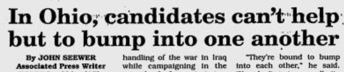
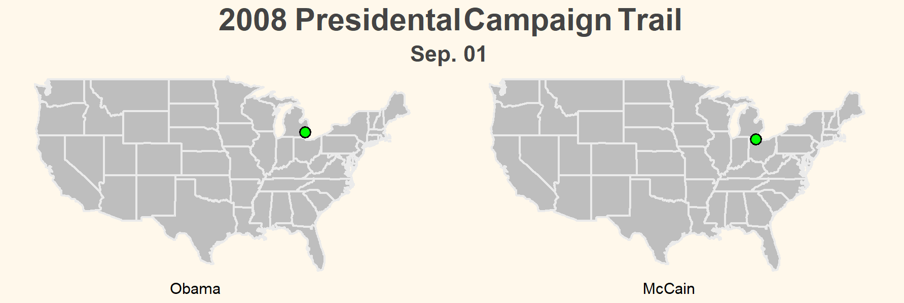

Each election cycle, candidates campaign to various states to try and appeal to voters from across the
country.
But how much of that actually matters? Are there any patterns that we can identify?
Can we use past campaigns to predict election winners?
Methodology
To answer these questions, we looked at every single campaign visit
for the past five elections. For transparency, we defined campaign
visits as "any public, in-person appearance apparently organized
or initiated by the candidates or their campaign, for the purpose
of appealing to a localized concentration
of voters".
Included:
Excluded:
Public Rally
Local Meeting
Town Hall
Debate
Private Fundraiser
National Event
A campaign visit might include a public rally or a town hall,
but doesn't include national events like debates or private events
like small fundraisers.
We scraped the data from christopherjdevine.com, as well as p2004.org.
921
Visits
20
Years
30
States
Past Elections
2004 Election
This election featured extremely similar campaigns between
candidates, with Bush having X visits and Kerry Y. The above map
might not show this since Kerry tended to re-visit cities, while Bush
went to new locations.
Campaigns were so similar that one newspaper thought Bush and
Kerry would run into each other in Ohio, one of the key states in the
election:

The Bryan Times | Sep 14, 2004
Despite campaigning very similarly across states, the incumbent
advantage gave Bush the presidency, which will become a trend
across the next few election cycles.
2008 Election

Here, between two new candidates, the campaign trails were much
more even, with Obama visiting 91 different cities and McCain 96.
Despite fairly close general campaign strategies, Obama outperformed
McCain in campaigning within swing states, campaigning more than
McCain in 5 of the 8 states, and winning 7 of them, giving him the
White House.
Poetically, his final campaign rally takes place in Manassas, Virginia, where
he delivers his final speech to a crowd of 100,000 people, an hour
before election day. He would eventually win the state, the first time
a Democrat to win the state since 1964.
2012 Election
Insert writeup here.
2016 Election
Here, the split was nearly two-thirds to one-third: Trump made 109 visits
in 18 different states, while Clinton made 66 in 11 states.
Trump narrowly won Michigan, Pennsylvania, and Wisconsin, giving him an edge
over Clinton in electoral votes. In each of these states, Trump made more
visits than Clinton.